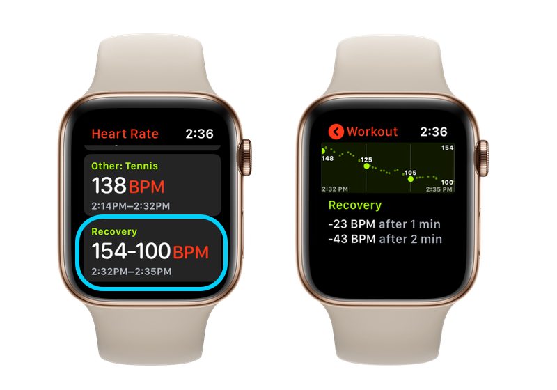
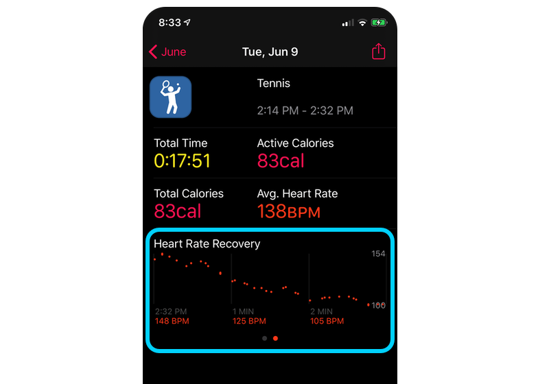
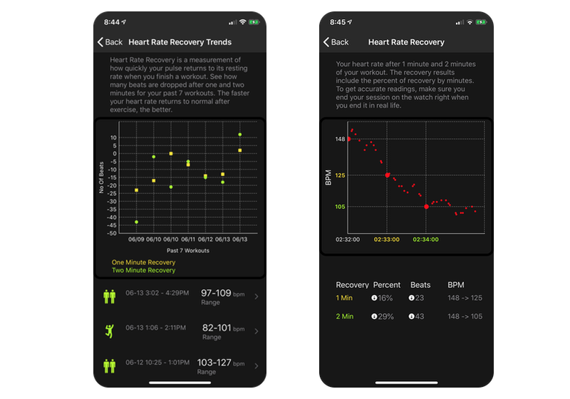

Heart rate recovery (HRR), is a measurement of how quickly your pulse returns to its resting rate when you finish a workout. This is one of the best indicators of your cardio fitness.
A 1999 study published in the New England Journal of Medicine found that abnormally low HRR was associated with double the risk of dying over 6 years. This 20-year-old study remain highly relevant and has been cited over 1000 times since publication.
A Cleveland Clinic Foundatation study between 1990 and 1997 of 9000+ patients found that heart rate recovery was a strong and independent predictor of all-cause mortality. When heart rate recovery decreases to less than 10-12 beats per min, risk of death increases markedly.
Another 2001 Journal of the American College of Cardiology paper determined that a 2 minute HRR < 22 beats/min provides a better estimate than 1 minute HRR < 13 beats/min in predicting mortality at 7 years in male veterans.
HRR on your Apple Watch
To view your HRR data, track your racquet sports workout with TennisKeeper on your Apple Watch. When you finish your session, tap End to get a summary. Scroll to the bottom of the Summary view and tap Save to save the data from your session.
Next tap on the heart icon on your Apple Watch to go to the Heart Rate app. Scroll to the bottom. You will see a Recovery section. Tap to see how much your heart rate decreased after 1 and 2 minutes of your racquet sports workout.  1 min and 2 min Heart Rate Recovery after Tennis Workout
To get a good reading, avoid doing anything strenuous for three minutes. In this recording, my heart rate was 148 BPM when I finished my tennis workout and then 125 BPM at the one-minute mark. Therefore the Apple Watch shows -23 BPM after 1 minute. At two minute mark, my heart rate drops to 105. Therefore the Apple Watch shows -43 BPM after 2 minute.
HRR in Activity App
You can also see the HRR data in the Activity App. Locate the workout added by TennisKeeper. On the Heart Rate section, swipe from right to left and you will see the 1 min and 2 min heart rate recovery data.
 Heart Rate Recovery in iPhone Activity appHRR Trends in TennisKeeper App
TennisKeeper Insights Pack will display your Heart Rate Recovery Trends as well as your percent of recovery by minutes.The Heart Rate Recovery Trends shows you how many beats are dropped after one and two minutes for your past 7 workouts. Tap on a specific workout to see the specific data.  1 min and 2 min Heart Rate Recovery Trends
In this example, my heart rate recovered 16% or 23 beats per minute in the first minute, only halfway through recovery. By the end of the recovery, my heart rate was down to 105, a total drop of 43 BPM, or 29%. These results generally show a healthy recovery.